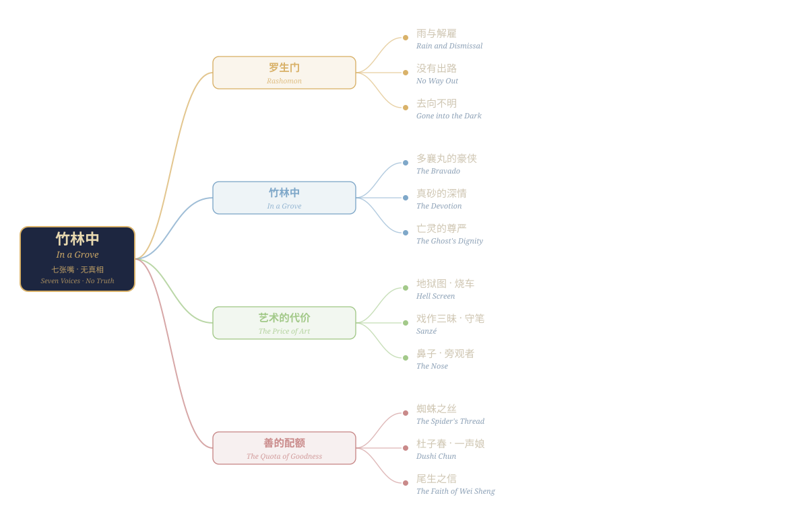

竹林中
〇 · 书籍信息
基本信息
| 书名 | 《竹林中》——人民文学出版社「蜂鸟文丛」芥川龙之介作品集，收录《罗生门》《鼻子》《戏作三昧》《地狱图》《蜘蛛之丝》《杜子春》《竹林中》《报恩记》《桃太郎》《湖南的扇子》《上海游记》等二十篇 |
|---|---|
| 作者 | 芥川龙之介（1892–1927），东京帝国大学英文学科出身，大正时代新思潮派主将，三十五岁自杀——遗书里的那句「对未来的恍惚的不安」，后来成了一个时代的象征 |
| 译者序 | 编者特意把书名定作《竹林中》而非《罗生门》：黑泽明电影取了后者的名，本集还芥川原篇名——竹林的七份口供才是原作，罗生门的雨只是它的兄弟 |
| 体裁 | 短篇集：志怪改写（《罗生门》《地狱图》）· 蒙古组曲式法庭戏（《竹林中》）· 中国题材改写（《杜子春》《南京的基督》《秋山图》）· 游记（《上海游记》） |
| 一句话 | 七个人讲同一桩凶案，拼不出一个真相——芥川用一份法庭笔录证明：人不是在说谎，人是在用真相保护自己的体面 |
一 · 核心主题总览
二十篇短章之下，是四组互相咬合的母题：① 多元真相（怀疑主义的实验）
《竹林中》由七份互不相容的陈述构成：三个当事人各自认领杀人，证词却处处对不上。译者序点破要害：这不是推理题，是认识论实验——芥川质疑的是「现实与真相的惟一性」本身。真相或许存在，但每张嘴都要先分走一块体面。
② 利己主义的显微镜
从《罗生门》的仆人（饿死还是当强盗）到《鼻子》的内供（鼻子长被人笑、短了更怕被笑），芥川写尽了「旁观者的利己主义」——人不是被恶打败的，人是被「不得已」一句接一句说服的。
③ 艺术与良知的对赌
《地狱图》的良秀为看火焰烧死了自己的女儿，《戏作三昧》的马琴在尊严与谄媚之间守一支笔——芥川把「艺术值得什么代价」写成一场赌局，而他自己就是最后的筹码。
④ 善行的利息与上限
《蜘蛛之丝》里大盗犍陀多只因放过一只蜘蛛，得到一条攀出地狱的丝——一次善行有利息，但自私会烧断丝；芥川的佛教寓言里，慈悲是有配额的。
二 · 第一段 城门之下 · 罗生门—— 雨 · 死尸 · 一步之差 ——
雨包围着罗生门
平安朝末年，京都连年灾荒，一个被主人解雇的仆人在罗生门下避雨。「雨包围着罗生门，从远处，唰唰地发着声响扑过来」——雨不只是天气，是把人逼进城门的三面墙：他想的是明天的生活怎么办，而答案只剩两个——饿死，或者当强盗。芥川的算术题从这里开始：「如果」这两个字永远不采取行动，到最后还是个「如果」——人心的滑坡，靠的从来不是决心，是台阶。
◆ 语言学习 · 日语关键词 · 平安京
| 羅生門（らしょうもん） | 平安京南面正门，本名罗城门——城门即时代的边界：门外是荒凉，门内是秩序，两头都在塌 |
|---|---|
| 検非違使（けひいじ） | 平安时代治安司法官——法庭、笔录、审讯，是《竹林中》全部结构的骨架 |
| 朱雀大路 | 贯穿平安京的南北主街——仆人听雨的地方：文明的中轴线，此时只剩雨声 |
| 平安朝 | 794–1185，日本贵族文化的黄金期——芥川偏选它的末世写人：秩序崩塌时，人剩下什么 |
老妪拔发：一套完整的恶的逻辑
仆人登上城楼，撞见一个老太婆在死人头上拔头发。她有一整套自洽的辩护：「要是不这么干，就得饿死，这也是没有出路才干的啊！」——她拔死人的头发做假发，因为那死人生前卖蛇干鱼也「活该」。芥川最狠的一笔不是恶，是恶的自我辩护词毫无破绽：每一环都成立，整条链通向深渊。
◆ 语言学习 · 修辞 · 滑坡
| 「没有出路」 | 全篇出现三次的辩护词——它不是事实陈述，是许可状：给自己签发作恶的通行证 |
|---|---|
| 旁观者的利己主义 | 《鼻子》里的同款判词——别人倒霉时你笑，自己倒霉时你怕被笑：利己主义的两种呼吸 |
| 面疱 | 仆人脸上的脓疮——身体的细节先于道德的细节：芥川写堕落，先写皮肉 |
剥衣之夜：勇气换了个方向
仆人听完，忽然生出勇气——「正是这个男人所缺少的那种勇气」，却「和刚才抓老太婆时的勇气全然相反的方向」。他剥下老妪的衣服，踢倒她，消失在夜里。「仆人的去向谁也不知道」——全篇唯一的留白，也是日本现代小说的第一句名句：他成为强盗了吗？不重要了。重要的是那级台阶，每个人都在某天夜里迈上过一级。
◆ 语言学习 · 句式 · 收束
| 勇气 | 全篇的计量单位——芥川不写「变坏」，他写「勇气换了方向」：向善与作恶用的是同一块肌肉 |
|---|---|
| 去向谁也不知道 | 零评论收束（show, don't tell 的日式源头）：判断权全部移交给读者 |
句型 ｜ 「仆人是饿死呢，还是当强盗，已经不再是难于抉择的问题了。」——一句话完成道德底线拆除的全过程：选择题变成单选题，而读者来不及举手。
三 · 第二段 竹林之中 · 竹林中—— 七份笔录 · 零真相 ——
三份证词：先搭好案发现场
检非违使面前，砍柴人、行游僧、放免、老妪四份证词先给出公共事实：武士金泽武弘死于竹林，妻子真砂失踪，大盗多襄丸在石桥上被擒。证词越详尽越可疑：弓箭、佩刀、桃花马说得越细，人证与物证的网就织得越密——网密到后面三份供述无路可走，只能各自撕网。
◆ 语言学习 · 法庭用语
| 检非违使 | 法庭戏的「读者席」——七个陈述者全部对他说话，读者坐他的位置，却拼不出案卷 |
|---|---|
| 放免 | 抓捕逃犯的差役——他的证词负责把多襄丸「钉」在现场：所有叙事都需要一枚钉子 |
多襄丸的供述：夸耀式认罪
「是我把那个男人杀死的！但女人我没杀。」多襄丸的陈述通篇是英雄的自我剧场：为一瞬的惊鸿一瞥赌上性命，决斗三十回合光明正大。他最锋利的一句话是刺向审判者的：「你们不用长刀，只会用权力、用金钱来杀死他，用花言巧语来杀死他。」——认罪书里藏着檄文，这是全篇最亮的刀。
◆ 语言学习 · 人物修辞
| 女菩萨 | 多襄丸看真砂的第一眼——欲望把自己写成宗教：劫掠者需要美化动机才能行动 |
|---|---|
| 三十回合 | 决斗的回合数是他唯一记得精确的数字——叙事者的精确度暴露他最想被人相信什么 |
女人的忏悔：那双冰冷的眼睛
真砂在清水寺忏悔：丈夫被辱后看她的那一眼——「既不是愤怒，也不是悲伤——只是投向我的那种鄙视的、冰冷的目光」，那一眼比强奸更彻底地毁了她。她的版本里，她先杀丈夫再自杀未遂——用「殉情未遂」把耻辱改写成爱情悲剧：受害者叙事的核心技术，是把羞耻换算成深情。
◆ 语言学习 · 意象 · 眼神
| 鄙视的目光 | 全篇真正的凶器——刀是谁用的可以争，但这道目光每一版陈述都出现：唯一的共识即是全案的核心 |
|---|---|
| 清水寺 | 京都忏悔圣地——把法庭戏对切成救赎戏：同一桩罪，在两个场景里拥有两种文体 |
亡灵之言：鬼魂也要体面
借巫女之口，武士武弘的亡灵开口：妻子被辱后竟跟着强盗走、撺掇强盗杀自己——他悲愤交加，拾短刀自刺。连死者都在维护自己的叙事：他不能接受「被妻子杀死」，更不能接受「妻子嫌他无能」——于是鬼魂的版本里，耻辱被重新分配给了所有人，唯独不留给自己。七份陈述至此闭合：每个人都要回一块体面，真相被切成了七块。
◆ 语言学习 · 结构 · 闭环
| 巫女 | 灵媒——芥川连「死者的第一人称」都写了，用超自然框架补全叙事装置的最后一块拼图 |
|---|---|
| 体面 | 本篇真正的通货：多襄丸买豪侠、真砂买深情、武弘买尊严——竹林里流通的不是真相，是体面 |
句型 ｜ 「人在说谎」太粗；芥川的版本是：每份陈述都先用真话垫底，只在唯一的痛处撒一个谎——识谎的正确姿势因此不是找矛盾，是找「哪个细节突然变得精确」。
四 · 第三段 艺术的代价 · 地狱图 · 戏作三昧—— 一笔换一个人 ——
良秀：为看火焰烧死女儿
画师良秀想画地狱图，却画不出烈火里的女人，求老爷烧一辆槟榔毛车给他看——老爷把良秀的女儿绑在了车上。「女儿在他面前活活被烧死，他却仍然专心画屏风」——横川僧都的判词是全书道德刻度的顶点：「不管艺术造诣多么高，一个人连五常都不辨，只能下地狱！」。可芥川的笔没有停：屏风完成，僧都看到漫天烈火的恐怖，情不自禁拍膝叫「太好啦！」——审判者先于所有人投降了：艺术的恐怖一旦完成，连道德的眼睛都会重新排队。
◆ 语言学习 · 美术史关键词
| 地狱图屏风 | 日本美术的永恒母题——六道绘：把审判画成风景，让恐惧变成装饰 |
|---|---|
| 猴秀 | 良秀的诨名——被嘲弄者与嘲弄世界的人是同一个：芥川给每个艺术家都留了这一个外号 |
马琴：尊严与谄媚之间的一支笔
《戏作三昧》写通俗小说家山东京传马琴的一天：澡堂里读者当面恭维又当面唾弃，书商催稿，家人怨他写「闲书」。「那浮世澡堂，简直便是神、释、色与无常的大杂烩」——芥川用一座澡堂写尽了写作者的全部社会关系。这是自传性最强的一篇：写畅销书被精英看不起的痛，芥川自己也正被「新思潮」的同侪这样看着。
◆ 语言学习 · 文学史关键词
| 戏作 | 江户时代的通俗读物——被官方禁印、被读者热爱：畅销与尊严的历史性矛盾，早在两百年前就已成型 |
|---|---|
| 《八犬传》 | 曲亭马琴的代表作——澡堂里那位读者能背出角色名：读者永远是作者唯一挡不住的安慰 |
内供：长鼻子与短鼻子
《鼻子》里禅智内供的五寸长鼻被徒弟的偏方治短了，谁知众人笑得更凶——原来旁观者的利己主义有两副面孔：看人倒霉时笑，见人翻身时更不安。结尾鼻子复原，内供重获舒畅：「——这样一来，看他们谁还敢笑话我！」长鼻子径自颤悠在黎明的秋风中。人不是被鼻子毁的，是被「别人怎么看」毁的——这一篇后来被鲁迅译进中国，评语只有四个字：深刻滑稽。
◆ 语言学习 · 心理关键词
| 旁观者的利己主义 | 内供之痛的学名：他们既不希望你解脱，也不希望你坠落——只希望你不离开他们的视线 |
|---|---|
| 偏方 | 热水泡、脚踩——所有的「快速解决」都会以另一种更难看的形状反弹回来 |
五 · 第四段 善的配额 · 蜘蛛之丝 · 杜子春—— 一次善行 · 一条丝 ——
犍陀多：丝断了
《蜘蛛之丝》是芥川最干净的佛经体寓言：大盗犍陀多只因一生放过一只蜘蛛，得到佛陀垂下一根银丝攀出地狱。爬到半途，他回望地狱众生，喝令他们滚下去——丝应声而断。「犍陀多只顾一己脱离苦海，毫无慈悲心肠，受到应得的报应，又落进原先的地狱」；而结尾是极乐的正午：「极乐莲池里的莲花，对这等事全不理会」——慈悲有配额，配额之外的自私不由天怒人怨，只由莲花沉默作证。
◆ 语言学习 · 佛经关键词
| 极乐净土 | 故事的测光仪——人间翻滚地狱翻滚，净土只有莲花与正午：芥川用「全不理会」写出了最大的冷 |
|---|---|
| 宝莲池 | 俯视地狱的窗——佛陀隔水看人：救援从不免费，也从不止息 |
杜子春：黄昏的城门与最后一声
改写自唐传奇《杜子春传》：落魄少年在洛阳西门遇铁冠子，三历富贵、两渡幻境，只须在魔王的酷刑与诱惑前保持沉默即可成仙。他沉默到最后——母亲化作马被鞭打折磨，他终于喊出那声「娘」。仙缘就此断绝，铁冠子却说他反而可贺：对母亲的爱心不甘，胜过成仙。芥川改唐传奇，改的全是结尾的价值观：中国故事里失败的是定力，芥川笔下得救的是人性。
◆ 语言学习 · 比较文学
| 改写 | 芥川最惯用的体裁——罗生门改《今昔物语》、杜子春改唐传奇、秋山图改清初画史：旧的壳，装新的问 |
|---|---|
| 沉默 | 成仙的门票——而全文论证沉默不值：值得的是那一声让人破功的「娘」 |
窗 · 舞会 · 尾生之信：三枚小品
《窗》写病房窗口的两个病人互相成全又互相误会的善意；《舞会》写明治十九年十七岁小姐的一场舞会与三十年后的回想——「天上飘着淡淡的春光」式的物哀；《尾生之信》改写《庄子》尾生抱柱：等的人在潮水里不来，他抱着桥柱不松手——三枚小品合起来是芥川的暗面：等待、守信、误会，全是人与人之间够不着的那几寸。
◆ 语言学习 · 美学关键词
| 物哀（もののあはれ） | 《舞会》的底色——美在将逝未逝之际：三十年后还记得的那支舞，才是舞会的全部意义 |
|---|---|
| 尾生抱柱 | 中国最古老的守信寓言——芥川把它写成漫画式的执念：信到极端即成荒诞，荒诞里又全是深情 |
六 · 人物图鉴与成长弧线—— 主角配角 · 一张表看穿 ——
主要人物
仆人（罗生门）——被解雇的更夫——全日本文学最著名的一步台阶：从「如果」到「不择手段」只用了一场雨
多襄丸（竹林中）——自封的大盗英雄——认罪书里藏檄文，最准的一刀扎向审判席
真砂（竹林中）——武士之妻——她那一版的凶器是丈夫的目光，她用殉情未遂把耻辱改写成深情
金泽武弘（竹林中）——二十六岁武士——连亡灵都要体面：鬼魂版陈述里，刀最后一次回到了自己手里
良秀（地狱图）——画师——艺术与良知对赌的玩家：赌注是女儿，奖品是一幅让审判者叫好的屏风
次要人物（功能位）
| 老妪 | 罗生门上的拔发者——「没有出路」辩护词的原创作者，仆人只是照抄 |
|---|---|
| 检非违使 | 法庭戏的静默听众——七份陈述都说给他听，他一句判决也没下 |
| 内供 | 长鼻子的禅智内供——被「别人怎么看」毁掉的教科书病例 |
| 犍陀多 | 地狱底的大盗——一生只做对一件事，却在丝上露了本性 |
| 马琴 | 戏作三昧中的小说家——在澡堂与书房之间守一支笔 |
| 杜子春 | 洛阳西门下的少年——为一声「娘」放弃成仙 |
七 · 主题与象征—— 每个道具都在说话 ——
| 罗生门 | 文明的边界——门内是崩塌的秩序，门外是荒野；后来这扇门成了「各说各话」的世界性隐喻 |
|---|---|
| 雨 | 压垮人的第三面墙——雨不停，人就得往楼上走：环境即推力 |
| 竹林 | 真相的容器——七份陈述里，竹林的光线、刀的位置各不相同：连凶案现场都不肯统一口径 |
| 地狱图屏风 | 艺术的账单——每一幅杰作背后都站着一件被牺牲的东西，只是有的屏风画得更露骨 |
| 蜘蛛丝 | 善的利息——配额极小、承重极低，一念自私即断 |
| 长鼻子 | 他人目光的实体化——长时被笑、短时更被笑：舆论的两种呼吸 |
八 · 写作手法赏析—— 怎么写，就能怎么学 ——
① 多声部拼贴（拼图叙事）
《竹林中》七份陈述零旁白、零交叉——芥川不给读者任何一块可拼合的图底：真相不可拼合本身即主题。黑泽明后来在《罗生门》里补了第四版本（樵夫目击），那是电影的需要，不是芥川的意思。
② 环境推力法
《罗生门》的开篇是一份灾荒简报：地震、旋风、火灾、饥馑——先写时代塌方，再让个人从塌方里滚下来。恶不再需要动机，只需要台阶。
③ 改写即翻案
芥川的体裁是「旧壳新问」：罗生门问人怎么滑向恶，杜子春问仙与爱哪个值钱，尾生问守信到极端是不是荒诞。故事是旧的，问题是新的——这就是「翻案文学」的全部尊严。
④ 零评论收束
「仆人的去向谁也不知道」「极乐世界，大约已近正午时分」——判断权整包移交给读者：日本现代短篇小说从这两句出发。
九 · 名段欣赏—— 原文精读 · 逐段赏析 ——
十 · 金句摘录—— 12 条 · 中英对照 · 带出处 ——
"雨包围着罗生门，从远处，唰唰地发着声响扑过来。"—— 罗生门 · 开篇
"要是不这么干，就得饿死，这也是没有出路才干的啊！"—— 罗生门 · 老妪
"那末，我剥了你衣服，你也用不着恨我了吧！我要是不这么干，我也就饿死了！"—— 罗生门 · 仆人
"仆人的去向谁也不知道。"—— 罗生门 · 结尾
"是我把那个男人杀死的！但女人我没杀。"—— 竹林中 · 多襄丸
"而你们不用长刀，只会用权力、用金钱来杀死他，用花言巧语来杀死他。"—— 竹林中 · 多襄丸
"既不是愤怒，也不是悲伤——只是投向我的那种鄙视的、冰冷的目光。"—— 竹林中 · 真砂
"不管艺术造诣多么高，一个人连五常都不辨，只能下地狱！"—— 地狱图 · 僧都
"犍陀多只顾一己脱离苦海，毫无慈悲心肠，受到应得的报应，又落进原先的地狱。"—— 蜘蛛之丝
"——这样一来，看他们谁还敢笑话我！内供心里这么喃喃自语，长鼻子径自颤悠在黎明的秋风中。"—— 鼻子 · 结尾
"那浮世澡堂，简直便是神、释、色与无常的大杂烩"—— 戏作三昧
"以多重叙述相并行的开放式叙事结构，架构出事实经过无法拼接的小说，这应该属于一个没有先例的独创。"—— 译者序
十一 · 拓展阅读—— 原文 · 词条 · 译文 ——
原文与文本
- 芥川龙之介 — Wikipedia —— 生平、遗书「恍惚的不安」与芥川奖由来
- In a Grove — Wikipedia —— 《竹林中》原篇（1922）：七份陈述的英译与研究
改编与谱系
- Rashomon — Wikipedia —— 黑泽明 1950：罗生门效应（Rashomon effect）一词的出生证
- Rashomon effect — Wikipedia —— 同一事件多版本叙述的心理学与司法学术语
十二 · 个人感悟与心得—— 三点心得 ——
竹林 · 罗生门 · 一条丝
① 竹林中没有凶手，只有陈述者
读《竹林中》最大的收获是换一种听法：听人叙述时，不找「谁在说谎」，找「哪个细节突然精确」——精确处即体面所在。人用真相保护自己的伤口，谎言只负责补那一处。
② 恶的语法是「没有出路」
罗生门老妪与仆人接力使用的同一句辩护词，是所有滑坡的模板：第一步永远有一个真实的困境，第二步开始困境只是通行证。识别它，就能在自己迈上第一级台阶前停下。
③ 改写即提问
芥川的二十篇几乎全是改写：旧故事是壳，新问题是核。读经典不必原创题材——把老故事问一个新的问题，就是翻案的全部尊严。
—— 芥川死于 1927 年 7 月 24 日凌晨，书桌上放着《西方的人》。他给妻子的遗书里写：「人唯有在悲伤时才说出真话吗？未必。悲伤也会说谎。」
十三 · 一页速查（复习用）
| 全书骨架 | 20 篇四线：罗生门（滑坡）· 竹林中（拼不出真相）· 地狱图/戏作三昧（艺术的代价）· 蜘蛛之丝/杜子春（善的配额） |
|---|---|
| 核心命题 | 真相不可拼合；恶的语法是「没有出路」；艺术的对赌里审判者最先投降 |
| 必读篇目 | 罗生门 → 竹林中 → 地狱图 → 鼻子 → 蜘蛛之丝（五篇即能拼出完整芥川） |
| 三大符号 | 罗生门（边界）· 竹林（真相容器）· 蜘蛛丝（善的利息） |
| 一句话总结 | 人不是在说谎——人是在用真相保护自己的体面 |
十四 · 全书思维导图—— 一图纵览 ——

一图纵览全书骨架 · 中英双语对照 · 手机端可左右滑动查看全图